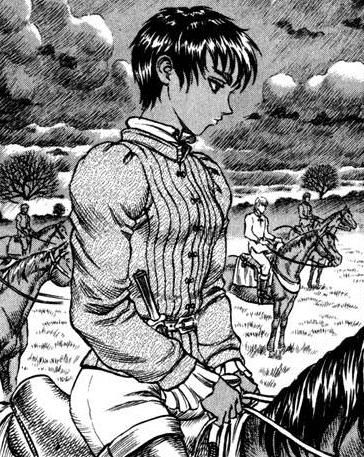

Casca

Casca é apresentada como uma bela mulher, de baixa estatura e musculosa, negra de olhos castanhos e cabelo preto curto. Em Pós-eclipse, sua aparência é alterada, seus cabelos crescem até na altura dos ombros e a Marca do Sacrifício é selada em seu peito esquerdo.
Personalidade
Personalidade
Como uma jovem de origem humilde, Casca considerava dificuldades, tais como fome e sequestro, um fato normal da vida de camponesa. No entanto, depois de ter sido quase estuprada por um nobre, ela escolheu lutar, antes de ser auxiliada por Griffith, o qual ofereceu a ela uma espada para se defender. Matando o nobre ela mesma, Casca passa a seguir Griffith, tornando-se uma guerreira estoica, endurecida, e imensamente leal no processo. Tal era a sua dedicação, que todos sabiam que ela estaria disposta a dar sua própria vida por sua causa. O comportamento frio de Casca esconde seu próprio passado resultante de sua infância traumática, e os desafios que ela enfrentou por causa do preconceito em relação ao seu sexo. Incrivelmente dedicada à causa de Griffith, ela imediatamente despreza Guts por a substituir como a subordinada mais confiável de Griffith, até mesmo chegando a confessar que já desejou matá-lo por tirar tudo dela. Após a prisão de Griffith, ela passou um ano agindo como a líder do Bando do Falcão na ausência do Falcão e de Guts, o que a deixou ainda mais amargurada com Guts. No entanto, os dois (Guts e Casca), eventualmente, se conciliaram e reconheceram que a relação deles era mais do que apenas a de meros companheiros de luta no campo de batalha, e sim como, praticamente, namorados. Após o Eclipse, a personalidade de Casca é completamente apagada, sua fala e sanidade são roubadas, e quaisquer abordagens feitas por um homem, sendo com intenção sexual ou não, desencadeiam a lembrança da violação sofrida nas mãos do demônio Femto. Quando vários bandidos tentaram estuprá-la, ela freneticamente matou todos eles em resposta, e até mesmo atacou Guts em um ataque de pânico. Casca se mostrou sentir relativamente segura perto de Guts, tendo o reconhecido como um protetor, mas começou a temê-lo após ele a atacar enquanto estava possuído. Ela também parece possuir um forte instinto maternal, como mostrado quando ela tentou proteger o seu filho de Guts enfurecido, o qual não sabia que o filho era seu também.
História